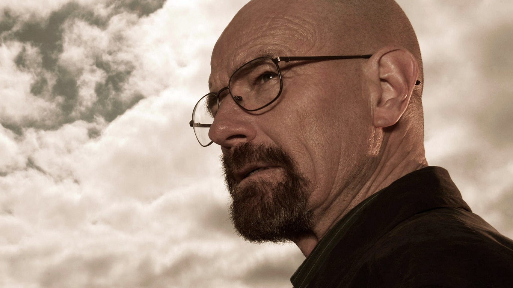
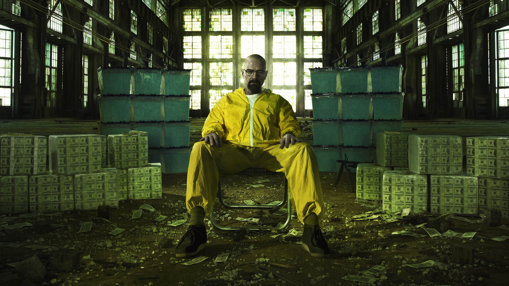
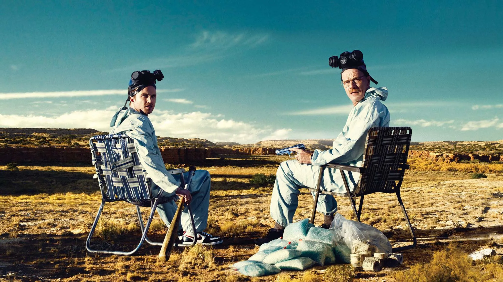
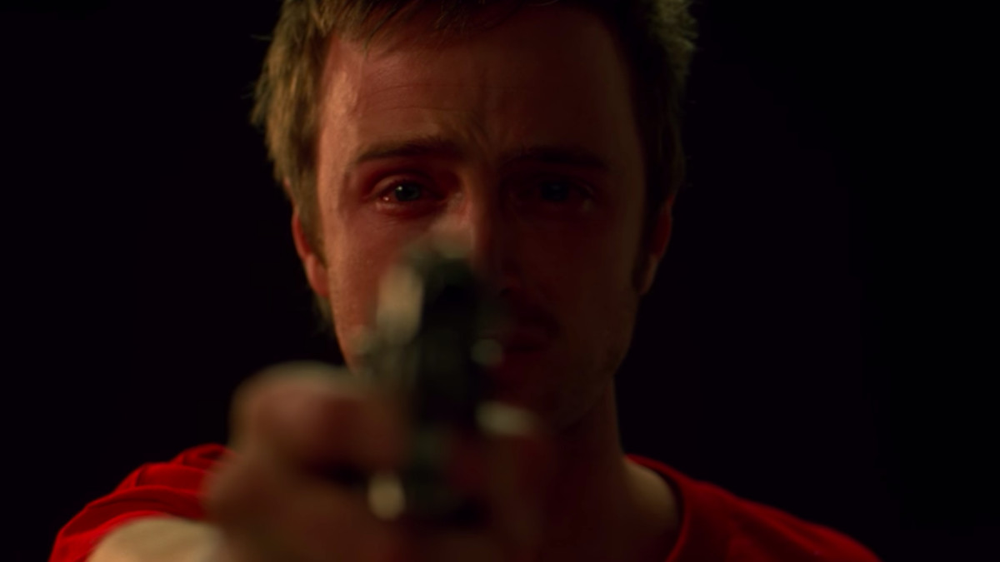
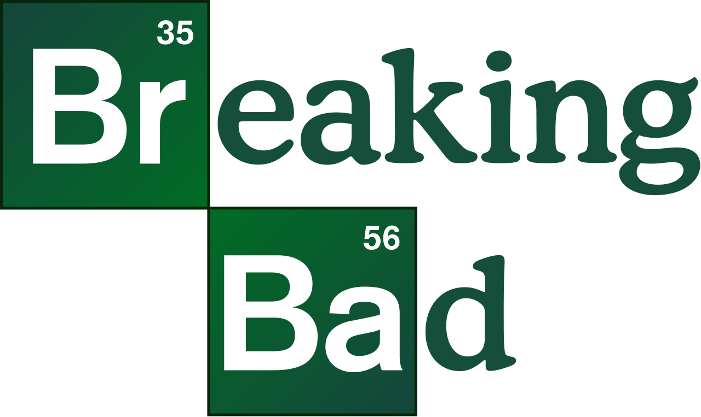

Criada e produzida por Vince Gilligan, Breaking Bad retrata a vida do químico Walter White. Após ser diagnosticado com câncer no pulmão, Walter resolve produzir metanfetamina de alta pureza com seu ex-aluno, Jesse Pinkman, para pagar suas dívidas hospitalares e dar uma boa vida aos seus filhos.